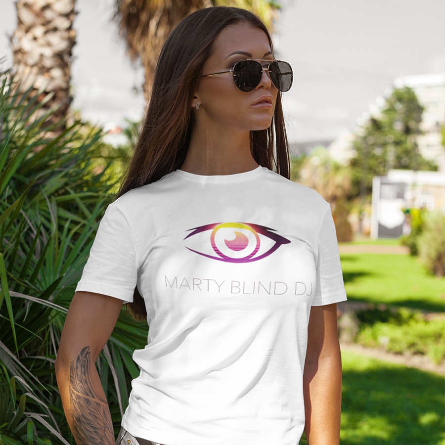

Porter un message
Une marque qui donne de la visibilité à la cause des déficients visuels.
Fondateur de Blind Touch
Blind Touch met en lumière la cause des déficients visuels avec humour, style et autodérision. Une marque engagée, pensée par Marty pour soutenir, faire sourire et ouvrir la discussion.

Mission
En France, plus de 1,7 million de personnes sont aveugles ou malvoyantes. Blind Touch utilise le vêtement, l'humour et l'autodérision pour faire bouger les regards et soutenir la communauté.
Une marque qui donne de la visibilité à la cause des déficients visuels.
Des phrases pensées pour provoquer le sourire et ouvrir la conversation.
Un univers textile engagé, reconnaissable et assumé.
Engagement
Blind Touch assume une voie différente : parler du handicap visuel avec des vêtements que l'on peut porter au quotidien, des phrases qui déclenchent une réaction et un ton qui évite la gêne. L'idée n'est pas de donner une leçon, mais d'ouvrir la discussion.
Le handicap visuel ne se résume pas à la canne blanche : Blind Touch aide à en parler autrement.
Une phrase sur un t-shirt peut ouvrir un échange plus simplement qu'un long discours.
Style, confort, message et qualité doivent rester au même niveau.
Vidéo
La vidéo et les visuels donnent le ton : une marque engagée, mais jamais triste, pensée par Marty pour assumer le sujet avec personnalité.

Blind Touch parle du handicap sans gêne, avec humour et personnalité.

Concept et impression Made in France, respect de l'environnement, qualité premium.